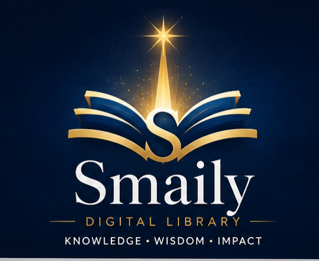
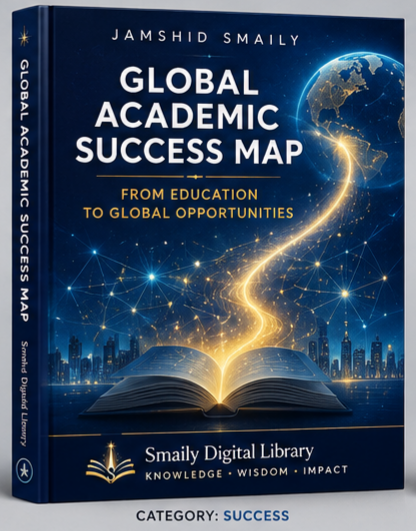

Knowledge • Wisdom • Impact
Achievement • Growth • Leadership • Impact
The central knowledge hub for educational, professional and personal success within the Smaily Knowledge Ecosystem.
The Success Hub connects knowledge, capability and opportunity to meaningful achievement and long-term impact.
It serves as the practical realization layer of the entire ecosystem.

The foundational work of the Success Domain.
A framework for understanding educational pathways, academic opportunities and long-term achievement.
Knowledge │ ▼ Capability │ ▼ Opportunity │ ▼ Achievement │ ▼ Leadership │ ▼ Impact
Educational pathways, learning strategies and academic achievement.
Developing vision, responsibility, influence and long-term impact.
Continuous growth, self-improvement and lifelong learning.
Connecting local potential to international opportunities.
Educational, leadership and success-related articles and essays.
Frameworks, observations and working notes related to achievement and development.
Success Domain Ecosystem Map Foundational Works Digital Library